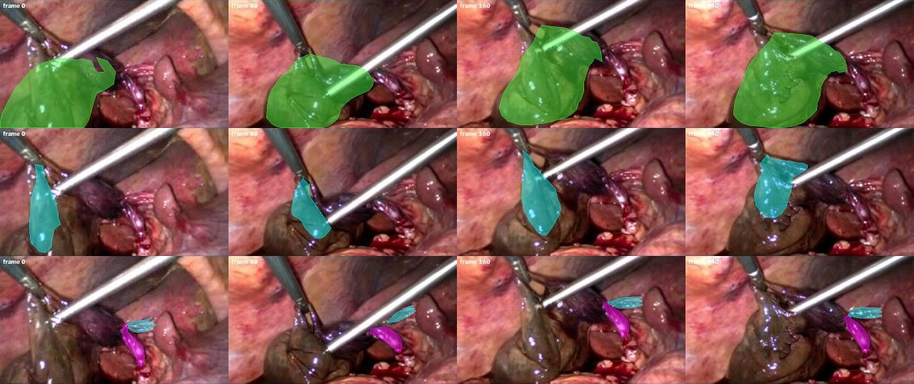
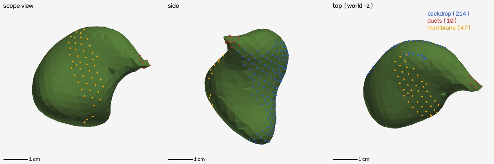
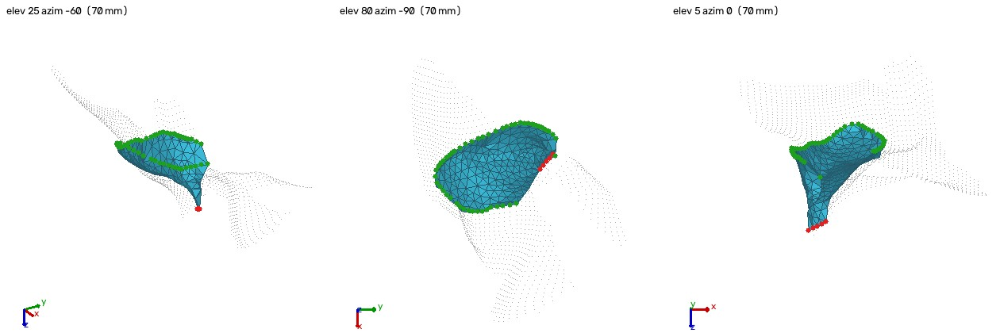
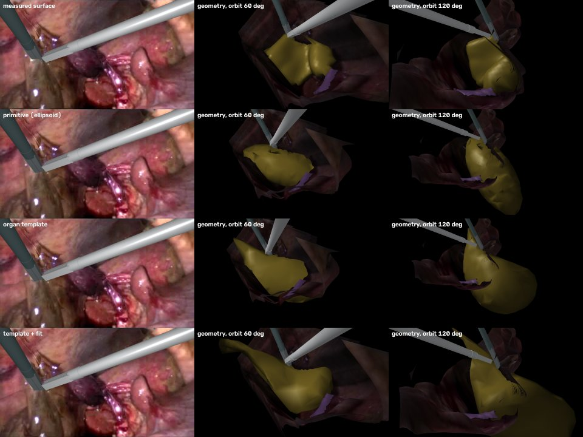
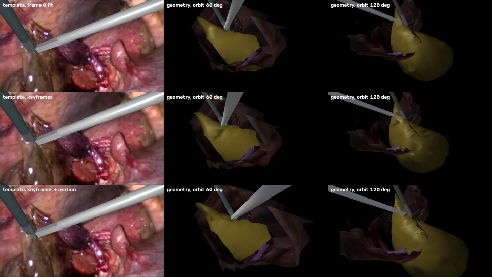

把真实腹腔镜视频重建成可以重新仿真的 MuJoCo 场景。这一版按组织分开建模：胆囊、腹膜、胆管、背景、器械各由一个子 agent 负责，每个都是模板加多视角拟合；再把它们合成一个 4D 动力学场景，迭代检查、修正了 22 轮。上一版的长重建和器官模板对比放在后面。
上一版仿真把两把器械的作用弄错了。现在抓钳夹住腹膜一端的一排顶点，把它提成帐篷；探针从腹膜下面伸进去，顶住胆囊颈。和撤掉探针的同一段仿真相比，探针附近的胆囊壁沿探针方向最多被压进 6.2 mm，接触的 185 帧里中位 2.3 mm；探针再深 5 mm，最大压入 7.8 mm。
器械按视频里的轨迹运动。肝床、腹膜底边、每根胆管的 3 个节点按 4D 重建的轨迹驱动，其余部分全部由物理算出。直接回放 4D 重建得到 0.79 / 0.79 / 0.76，仿真达到它的 82–88%。胆囊整体摆动的误差从 3.6 mm 降到 0.8 mm。
提升几乎都来自结构性修正：肝床按重建驱动，腹膜和胆囊的重建互相一致，胆管三点驱动，胆囊换均匀四面体网格。用前 130 帧选、后 120 帧检验：这些结构性选择在后半段仍然最好。材料参数选出来的值到后半段不再最好，但差距小于 0.01 IoU，和同一配置重复运行的波动相当。
五个子 agent 各负责一个组织：胆囊、腹膜、胆管和细纤维、背景（含肝脏）、器械。每个都从一个模板出发，用镜头 A 全部 26 个关键帧（每 10 帧一个，各用自己的相机）联合拟合出静止形状，再逐帧拟合出 4D 形变。做完之后各自用多种指标检查，并在三个时段分别报告：摆镜 0–61 帧、提起 62–129 帧、探入 130–250 帧。
| 组织 | 模板 | 拟合 | 自身检查（摆镜 / 提起 / 探入） | 仿真里的表示 |
|---|---|---|---|---|
| 胆囊 v12 | BodyParts3D 胆囊（15.4 ml） | 位姿 + 三轴缩放（0.99 / 1.21 / 1.70）+ 自由形变网格；静止形状离缩放后模板平均 1.7 mm。每帧 4D：ARAP、体积、时间平滑。胆囊颈尖固定在胆管起点 | IoU 0.79 / 0.81 / 0.79，深度残差 0.9–1.0 mm，任何一帧都没有翻转的四面体 | 1383 节点、6186 个四面体，E = 1.2 kPa，ν = 0.45；肝床 214 个节点按重建驱动 |
| 腹膜 v08 | 直纹壳"帐篷"：钳口夹住的一排 → 胆囊表面上的底边 | SAM 2.1 分割；底边贴在胆囊表面（中位 0.40 mm）；被夹的一排放在抓钳的工具中心点（≤ 0.8 mm）；任何一帧都不穿进胆囊 | IoU 0.76 / 0.74 / 0.82，边界 F 0.41 / 0.45 / 0.52 | 237 顶点的弯曲壳 + 边弹簧 10 N/m；底边按重建驱动；和胆囊接触 |
| 胆管、细纤维 v10 | 广义圆柱：中心线 + 半径分布 | 关键帧联合拟合中心线和深度；起点放在视频里胆管离开胆囊颈的位置；细纤维带拆成 3 根 | 胆管 IoU 0.83 / 0.81 / 0.85，细纤维 0.64 / 0.67 / 0.77 | 4 根 13 节点缆绳（拉伸 + 隔点弯曲弹簧），首、中、尾节点按重建驱动 |
| 背景 v08 | 试过肝脏模板：留出关键帧上床沿误差 2.96 mm，平滑填充只有 0.77 mm，没有采用 | 251 帧的静止像素融合成一张带纹理的表面，并给出逐帧细化的相机转动 | 深度残差 2.3 mm，局部 NCC 0.73（旧流程 5.9 mm / 0.32） | 静态网格，只渲染 |
| 器械 v06 | 抓钳、探针的杆和钳口 | 每帧的尖端、穿刺点、朝向 | 尖端误差 0.3–2.8 px | 按尖端轨迹反求关节角，位置控制 |
IoU 按各组织 agent 自己的分割掩码计算，器械挡住的像素不计。翻转四面体指四面体的有向体积变号，网格里不应出现。



五个模型放进同一个 MuJoCo 场景：胆囊是四面体体单元，腹膜是壳，胆管是缆绳，器械按视频反求的轨迹做位置控制。仿真步长 0.0625 ms，10 秒视频约 6 分钟算完。
| 胆囊 IoU | 腹膜 IoU | 胆管 IoU | 胆囊刚体 / 形变误差 | 翻转四面体 | 胆囊体积 | |
|---|---|---|---|---|---|---|
| 回放 4D 重建（上限） | 0.788 | 0.788 | 0.761 | — | 0 | 27.3–29.6 ml |
| 第 1 轮仿真 | 0.500 | 0.345 | 0.460 | 3.6 mm / — | — | — |
| 第 22 轮仿真 | 0.650 | 0.682 | 0.669 | 0.80 / 0.90 mm | 97 / 6186 | 27.2–28.3 ml |
IoU：每 10 帧一次，扣掉器械和比视频深度更靠后 6 mm 以上的像素。去掉深度这一刀，仿真是 0.70 / 0.75，回放是 0.77 / 0.79。刚体 / 形变误差：对 4D 重建做 Procrustes 分解，分成整体移动和形变两部分。第 1 轮的翻转四面体数和形变误差那时还没有测，记作"—"。
| 轮 | 改动 | 结果 | 决定 |
|---|---|---|---|
| 1 | 五个模型首次合成 | 胆囊 0.50、腹膜 0.34、胆管 0.46；帐篷和探针下压第一次出现 | 基线 |
| 2 | 从重建的第 0 帧状态开始 | 没有改善，组织松弛回静止形状 | 不采纳 |
| 3 | 7 组参数并行扫描 | 重建里胆囊整体摆动 3–11°，任何参数都复现不了（刚体误差 3.6–4.2 mm） | 摆动来自模型之外 |
| 4 | 肝床按 4D 重建驱动 | 胆囊 0.49 → 0.60，刚体误差 3.7 → 1.5 mm | 采纳 |
| 5 | 胆囊刚度 150–2400 Pa | 1.2 kPa 最好；发现腹膜和胆囊的重建互相穿插 | 采纳，退回腹膜组修 |
| 6 | 腹膜 v06、接触、底边驱动 | 腹膜 0.39 → 0.65；修好细长三角形引起的数值爆炸 | 采纳 |
| 7 | 胆管 v09 | 胆管 0.35 → 0.39，几乎还是不动 | 采纳，暂放 |
| 8 | 纹理渲染，加光流、光度两类指标 | 仿真光度比静止略差（NCC 0.36 vs 0.38） | 新指标 |
| 9 | 腹膜刚度 | 边软轮廓更好，但边被拉长到 5 倍 | 不变 |
| 10 | 腹膜底边另外软连到胆囊 | 无改善；发现探针把腹膜下的胆囊壁压低约 3 mm | 不采纳 |
| 11 | 探针深度 0–6 mm | 朝镜头移 2 mm 时下压量和重建一致 | 采纳 |
| 12 | 反事实动作、网格健康指标 | 五种动作都稳定、方向对；胆囊有 9% 的四面体翻转 | 新指标 |
| 13 | 材料和接触扫描 | 材料几乎不影响翻转；翻转的是小四面体，属于网格问题 | 接触调软，退回胆囊组 |
| 14 | 新版组织，胆管按节点驱动 | 胆管 0.44 → 0.66；仿真自己决定的节点，运动解释率 −0.4 → 0.7 | 采纳首、中、尾三点驱动 |
| 15 | 抓取点放在重建的顶点 vs 钳尖 | 重建顶点更差（−0.026） | 保持钳尖 |
| 16 | 胆囊 v12：均匀网格，胆囊颈不盖胆管 | 胆囊 0.62 → 0.655，刚体误差 1.23 → 0.81 mm，翻转 490 → 130；步长减半，变化 ≤ 0.01 | 采纳 |
| 17 | 胆囊 v13：重建更贴视频 | 仿真反而更差（0.637） | 保持 v12 |
| 18 | 带纹理渲染，仿真 vs 回放 | 不切深度时达到回放的 91–93% | — |
| 19 | 腹膜 v08：被夹住的一排放在钳尖 | 腹膜 0.68 → 0.70 | 采纳 |
| 20 | 缆绳刚度和阻尼 | 胆管 0.65 → 0.67，最大拉伸 25% → 5% | 采纳 |
| 21 | 胆囊 v14（体积守恒的重建），器械轨迹加噪声 | v14 更差；轨迹加 1 mm 噪声，胆囊 IoU 变化 ≤ 0.001 | 保持 v12 |
| 22 | 最终渲染和反事实动作 | 见下 | — |
完整记录（每轮的配置、所有指标和诊断）在 outputs/iter/LOG.md；每轮的输出在 outputs/iter/rounds/rNN/。
重建出来的场景可以换器械动作重新仿真，生成视频里没有出现过的情况，给医学世界模型做训练数据。下面五种都稳定，组织的响应方向也合理。
| 动作 | 探针压入（最大 / 中位） | 抓取力中位 | 胆囊体积 | 翻转四面体 |
|---|---|---|---|---|
| 视频里的动作 | 6.2 / 2.3 mm | 12 mN | 27.2–28.3 ml | 97 |
| 抓钳抬高 10 mm | — | 67 mN | 27.2–28.3 ml | 97 |
| 探针再深 5 mm | 7.8 / 3.6 mm | 12 mN | 25.5–28.0 ml | 288 |
| 撤掉探针 | 0 | 12 mN | 27.7–28.3 ml | 55 |
探针压入 = 和撤掉探针的仿真相比，探针尖 8 mm 以内的胆囊顶点沿探针方向多移动的距离。抓钳抬高那一行没有单独测压入。
下面是上一版的内容：长重建、器官模板对比、多视角联合求解。那时的仿真把每个器官当成一个整体，器械和组织的连接是手工设的。
胆囊视频 23.5–41.4 秒（448 帧，中间有一次镜头切换），两个镜头里场景、镜头和器械都对得上，胆囊（含胆囊颈）、条带和器械的连接也对了。组织被拉动的时段里，6 秒窗口的仿真把跟踪误差降了约三分之一（17.9 vs 27.1 px）；但整个 10 秒的镜头 A 里，没有哪种器官体好过静止基线（−3% 到 +7%）。镜头 B（分离胆囊管）里被拉开的胆囊管也没有复现。
10 秒的镜头 A 里，用模板或椭球补出完整体积的器官体，深度误差约 9.5 mm，直接测量是 13.9 mm；轮廓上椭球最好（IoU 0.61）。但牵拉时段的跟踪，四种器官体和静止基线都差不多，6 秒窗口里也都降了约三分之一，彼此拉不开。上一版"模板在长片段里最好、跟踪降 20%"的结论不成立：它建立在把胆囊颈错分成条带、胆囊被断成两块的重建上（见下面的"这一版的修正"）。
四处错误，修正后重新跑了所有片段和多视角版本，本页的数字全部是修正后的。
| 问题 | 原因 | 修正 |
|---|---|---|
| 胆囊在胆囊颈处断成两块 | 胆囊颈（探针尖右边那段深紫色、连向胆囊管的部分）被分割成了"条带"，于是胆囊体是一个三维器官，胆囊颈却是一片和它不相连的薄片。 | 胆囊颈归入胆囊（镜头 A 和 6 秒窗口重新分割），条带只保留细的粉白色索带。 |
| 条带只靠一个顶点挂在胆囊上，被拉出尖刺 | "离器官 12 像素以内"的条带顶点只有 1 个；胆囊一动，这个顶点被单独拽出来，形成针状的尖刺，多视角版本里条带被撕碎。 | 条带靠靠近器官的一整条边系在器官上（至少 8 个顶点；镜头 A 实际 35 个，6 秒窗口 58 个）。 |
| 抓钳隔空"抓着"胆囊 | 抓取时把附近顶点按当时的相对位置固定在钳口上，重建留下的 2–11 mm 间隙一直存在；椭球只挂在 1 个顶点上。 | 抓取最近点周围 8 mm 的一片组织，在 0.25 秒内把它拉进钳口。 |
| 跟踪误差的样本太少 | 上一版只在第 0 帧取一次特征点；镜头 A 开头的模糊摆镜让它们 5 帧内就丢了，10 秒只剩 35 个样本。 | 每 25 帧重新取点、每批跟 2 秒，按起点统计；主要看组织被明显拉动的时段。 |
分开检验过：只改抓取和条带系法（保留旧分割），镜头 A 的结果和上一版接近（牵拉时段直接测量 −12%、模板 −19%）；改了分割之后，在同一批旧特征点上量，新仿真也不再好过静止基线（+12% / +6%）。所以变化来自正确的胆囊形状本身，不是评估方式。去掉条带的系结也不改变结果。
镜头 A 包含之前那 6 秒，前后各延长了 2.5 秒和 1.5 秒；镜头 B 是视频后面的部分，换了一把弯分离钳，镜头先摆向胆囊管再移向胆囊床。
| 为了做长加的处理 | 做法 |
|---|---|
| 背景纹理 | 拼成一张比画面大的全景：每个位置取最早看到它、且没被器械挡住的那几帧。镜头摆动和器械移开后露出的是真实组织，不再是镜像或模糊的填补；从没看到过的地方不建网格。 |
| 器械 | 尖端、入口方向、穿刺点都自动求：穿刺点分"贴近镜头"和"与尖端同深度"两种拟合，取和视频更吻合的一种，并要求穿刺点在画面外、离镜头至少 4 cm（否则会退化到镜头中心）。器械看不见时沿自身的杆退向穿刺点。 |
| 分割 | SAM 2 在丢目标的帧补点：镜头 A 的胆囊体和胆囊颈、重新入画的探针；镜头 B 改为跟踪被分离的胆囊管。器械永远在前，器官掩膜里被器械盖住的像素一律剔除（湿润的胆囊颈常被算进抓钳）。 |
| 镜头 B 的组织 | 分离钳操作的是胆囊管，胆囊一直在画面边上没被碰，所以镜头 B 的可形变器官是胆囊管，没有对应的器官模板。 |
镜头 A 开头约 2.5 秒和镜头 B 中间的摆动都是快速、模糊的镜头运动，没有哪种相机模型能把这些帧和第 0 帧对齐好。镜头 B 估计还有约 1.5 cm 的平移，我们试了 6 自由度相机（单目深度 + 逐帧 PnP），它和第 0 帧的全局对齐反而更差（第 150 帧的图像梯度相关 0.45，只转动 + 变焦的模型 0.58），所以两个镜头都保留只转动 + 变焦的相机。
编程生成三维，本质上是用基本几何体拼。把基本几何体换成器官部件（这里是 BodyParts3D 的胆囊），再用观测去拟合，结果会不会更好？四种器官体用同样的观测拟合（可见表面的测得深度、器官轮廓、被前景遮挡的关系），场景里其他东西完全相同。

| 器官体 | 6 秒窗口（26–32 s） | 镜头 A（23.5–33.5 s） | ||||
|---|---|---|---|---|---|---|
| 轮廓 IoU ↑ | 深度误差 ↓ | 牵拉时段跟踪 ↓ | 轮廓 IoU ↑ | 深度误差 ↓ | 牵拉时段跟踪 ↓ | |
| 直接测量 | 0.763 | 5.6 mm | 17.9 px | 0.531 | 13.9 mm | 27.1 px |
| 椭球 | 0.701 | 5.0 mm | 18.2 px | 0.613 | 9.4 mm | 26.4 px |
| 器官模板 | 0.713 | 5.5 mm | 18.7 px | 0.548 | 9.7 mm | 27.5 px |
| 模板 + 拟合 | 0.733 | 5.4 mm | 17.8 px | 0.509 | 9.8 mm | 26.0 px |
| 静止基线 | 0.775 | 6.0 mm | 27.1 px | 0.523 | 14.1 mm | 26.8 px |
每 5 帧比较一次。轮廓 IoU：仿真器官投影与 SAM 器官掩膜的重合，只算没被器械和条带挡住的像素。深度误差：对单目测得深度的中位误差（场景本身就是用它建的，不是独立检验）。跟踪误差：每 25 帧在真实器官纹理上重新取特征点，每批跟 2 秒，量它们与仿真表面上对应点的距离（不依赖深度）；表里是牵拉时段的平均，即静止基线误差 ≥ 15 px 的起点（6 秒窗口 2 个、镜头 A 3 个），这个筛选只看静止基线，不偏向任何器官体。静止基线：器官停着不动，只有镜头在动（直接测量那一行的值，其他器官体的基线相近）。绿色是每列最好的值。
6 秒窗口里，四种器官体都把牵拉时段的误差降了约三分之一（17.8–18.7 vs 27.1 px），彼此相差不到 1 px。10 秒的镜头 A 里，牵拉时段四种器官体都和静止基线差不多（26.0–27.5 vs 26.8 px）：仿真里的胆囊被拉动了，但方向和幅度对不上视频。补出完整体积的器官体（椭球和模板）深度误差明显更小（9.4–9.8 vs 13.9 mm），因为直接测量只是可见表面挤出的一层壳；轮廓上椭球最好。上一版里模板在跟踪上的优势，在胆囊颈被正确归入胆囊之后消失了。
上面的重建几何和纹理主要来自第 0 帧一个视角。腹腔镜在动，片段里其实有多个真实视角。把关键帧（每 10 帧一个）当成多个相机，联合求每帧位姿、一个共享焦距、每帧单目深度的尺度和平滑修正。第一步只用光流对应点，它只能连起相隔几个关键帧的帧；第二步加入能跨大视角直接匹配的对应点，分别来自多视角网络 VGGT-1B 和传统的 SIFT 特征匹配。
| 相机几何 | 远距离误差 A | 远距离误差 B | 视场角 A / B |
|---|---|---|---|
| 单视角：转动 + 变焦（正文） | 5.8 px | 9.6 px | 47°（假设） |
| VGGT 直接给出的相机和深度 | 10.2 px | 15.4 px | 20° / 21° |
| 联合求解，光流（第一步） | 4.7 px | 8.3 px | 33° / 34° |
| 联合求解，光流 + VGGT 轨迹 | 4.1 px | 6.7 px | 31° / 22° |
| 联合求解，光流 + SIFT | 3.4 px | 4.5 px | 37° / 34° |
远距离误差：相隔 10 个关键帧（100 帧，4 秒）以上的两帧之间，用一组留出的特征匹配（ORB，任何方法都没用过）检验，把一帧上的点用该方法的位姿和深度投到另一帧，与真实匹配位置的中位距离。两个镜头是同一个内镜，视场角应该一致。
| 牵拉时段跟踪误差，比静止基线 | A 直接测量 | A 器官模板 | B 直接测量 |
|---|---|---|---|
| 单视角（正文） | +1% | +7% | +3% |
| 联合求解，光流 | +6% | +29% | 无牵拉时段 |
| 联合求解，光流 + SIFT | +3% | +15% | 无牵拉时段 |
| 联合求解，光流 + VGGT 轨迹 | −2% | +34% | −2% |
与问题 02 相同的跟踪误差，每种几何和它自己的静止基线比（负数是更好）。"无牵拉时段"：这种几何下镜头 B 没有静止基线误差 ≥ 15 px 的起点；全程看，镜头 B 的各个版本都没有好过静止基线。完整结果在 outputs/experiments/multiview_2026-10-07 和 wide_baseline_2026-10-07。
VGGT 在这段腹腔镜视频上不能直接用。它的轨迹可见度和置信度几乎全部低于常用阈值，轨迹比真实运动慢 5–10 像素，并把镜头的摆动解释成平移加 20° 的窄视场（光流联合求解得到的是 13–17° 转动、约 33° 视场）。直接用它的相机，远距离误差比单视角还大；拿它做初值，同一个内镜在两个镜头里被求出 1109 和 1310 像素两个不同的焦距。数值精度不是原因，bfloat16 和 float32 的结果一样。它是在自然场景上训练的，内镜的反光、湿润组织和形变不在它见过的数据里。
跨大视角的约束本身是有用的。把经过几何校验的 SIFT 匹配加进联合求解，远距离误差在镜头 A 降了 28%（4.7 → 3.4 px），镜头 B 降了 45%（8.3 → 4.5 px），近距离不变差，两个镜头的视场角也一致。VGGT 的轨迹作为约束也有一点帮助，但它的系统偏差让近距离变差、焦距被拉偏。
仿真上，几何更准没有带来更好的组织运动。镜头 A 牵拉时段，直接测量在各种几何下都和静止基线差不多（−2% 到 +6%），器官模板在多视角几何下更差（+15% 到 +34%）；镜头 B 在哪种几何下都没有复现。第 0 帧仍是弱点：它处在一次快速、模糊的摆镜里，匹配很少，而所有相机都以它为基准。正文结果保持单视角版本。
正文里的模板只用第 0 帧拟合。镜头在动，后面的帧能看到胆囊的其他角度，于是把后面关键帧里的胆囊轮廓和深度也加进拟合，器械挡住的像素算"未知"。难点是胆囊从一开始就被拉着，不同时刻的形状本身在变，所以试了两种：刚性版只用胆囊还和第 0 帧轮廓对得上的关键帧；扣除运动版用正文模板仿真在每个关键帧的形变，把候选模板先变形，再和那一帧比。

| 镜头 A，器官模板 | 关键帧 | 轮廓 IoU | 深度误差 | 牵拉时段跟踪 | 同左，SIFT 几何 |
|---|---|---|---|---|---|
| 只用第 0 帧（正文） | 1 | 0.548 | 9.7 mm | +7% | +15% |
| 多关键帧，刚性 | 2 | 0.528 | 8.6 mm | +1% | +16% |
| 多关键帧，扣除运动 | 5 | 0.535 | 8.9 mm | +4% | +34% |
| 直接测量（对照） | 1 | 0.531 | 13.9 mm | +1% | +3% |
关键帧数含第 0 帧（单视角几何；SIFT 几何下分别是 2 和 7 个）。牵拉时段跟踪：和自己的静止基线比，负数是更好；镜头 A 只有 3 个牵拉起点，差别是方向性的。完整结果在 outputs/experiments/template_keyframes_2026-10-07。
胆囊颈归入胆囊之后，整个胆囊的轮廓更早就和第 0 帧对不上，刚性版只找到 1 个可用的关键帧（第 5 帧），扣除运动版用了 4 个。两种都只让结果小幅变化：深度误差从 9.7 降到 8.6–8.9 mm，牵拉时段从 +7% 到 +1% / +4%，都没有好过静止基线；在多视角（SIFT）几何里更差。扣除运动版扣掉的是仿真自己算出的形变，而仿真的形变本身就对不上视频，所以帮不上忙。要让模板真正用上整段视频，形变也得放进拟合：用整段观测去拟合"模板加它在仿真里的形变"，而不是先拟合、再仿真。